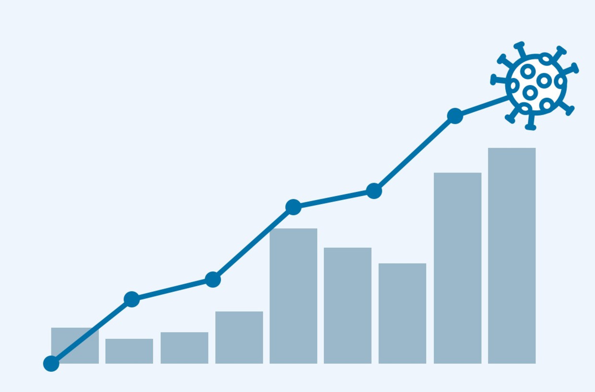

Nieuws coronamaatregelen
Analyse presidentsverkiezingen
Wie was de winnaar van het eerste verkiezingsdebat tussen Trump en Biden?
Nieuws
Meer-
Strengere regels voor horeca in regio’s waar coronabesmettingen snel oplopen
-

Zoektocht naar stratenmakers die al sinds 1974 worden vermist levert niets op
-

Europees Parlement wil Belarussische president Loekasjenko op sanctielijst
-
Het kussen van de rechtspleging moet worden opgeklopt
-

Sportief directeur Jumbo-Visma uit Tour verwijderd na beledigen UCI-medewerker
Opinie debat VS
Het Amerika-panel over het presidentieel debat: ‘Trump debatteerde als een kleuter op coke’
Best gelezen
Meer
Profiel nieuwe premier
Alexander De Croo is premier van België - die ene politieke functie die zijn vader nooit heeft gehad
Analyse het mes gaat in shell
Wat blijft er na deze voor het bedrijf ongekend harde reorganisatie over van het Shell van weleer?
Analyse herstelfonds
Crisis dreigt over Europese herstelmiljarden: ‘Kom van jullie fantasy island’
Nieuws & Achtergrond
Analyse Expertgroep
Politici nemen het RedTeam serieus over corona. Wie zitten erachter en wat is hun doel?
Analyse presidentsverkiezingen
Trump laat zich door regels of fatsoen niet aan banden leggen en rekent op loyalisten
Coronavirus
-

Mondkapjestest Welke mondkapjes beschermen het beste?
-
Analyse Wanneer mag de herstellende coronapatiënt weer naar werk of school?
-
Analyse Steeds meer adviseurs ontdekken: die mondkapjes zijn zo gek nog niet.
-

Data De belangrijkste grafieken en kaarten over corona in Nederland
-
Nieuws Coronapatiënten lijken minder ziek, blijkt uit vergelijking tussen eerste en tweede golf
Bellen met onze vrouw in marokko
‘Paarden kosten in Marokko nog maar 100 euro: koetsiers verkopen ze massaal om aan eten te komen’
Analyse mondkapjesadvies
Ruttiaanse flexibiliteit: willen jullie mondkapjes, dan kunnen jullie ze krijgen
Uitgelicht
Special
Waar eindigt kritisch nadenken en begint de complot-theorie?

Achtergrond inlichtingenwereld
Specialisten van AIVD en MIVD richten bedrijf op. Wat gebeurt er met hun kennis van staatsgeheimen?
Quiz Amerikaanse verkiezingen
Test uw kennis over de Amerikaanse verkiezingen
Surfongeluk Schevenigen
Vijf surfers kwamen om, vijf families vertellen hun verhaal

Video pakistan